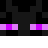

Gameplay · 0.2.1
Spanningen en capaciteiten
Vergelijk alle twaalf ingebouwde vormen en hun drie mogelijkheden.
Sterke en zwakke punten
| Spanning | Het goede | Het slechte |
|---|---|---|
| Meer gezondheid, bepantsering en schade, regenereert in het donker, immuun voor honger | 12% langzamer, brandt in de zon, kan niet slapen; vlees alleen in volledige vorm | |
| Sterkere pijlen, nachtzicht, immuun voor gif en honger, zachtere valpartijen | Minder gezondheid, explosies doen meer pijn, brandt in de zon, kan niet slapen | |
| Heeft minder last van explosies, sneller, extra pantser, creepers laten je met rust | Bang voor katten, vuur doet meer pijn | |
| Beklimt muren, loopt door spinnenwebben, springt hoger, ziet in het donker | Vuur doet meer pijn, kan geen helm dragen vanaf fase IV | |
 Enderman | Stappen over volledige blokken, meer gezondheid en schade, pijlen raken je minder | Water en regen verbranden |
| Zwemt snel, ademt en ziet onder water | Traag op het land, brandt in de zon; in volledige vorm droogt het uit na drie minuten zonder water | |
| Vuur kan je geen pijn doen vanaf fase III, vliegen vanaf fase IV, zachtere valpartijen | Water en regen verbranden en gronden je, pijlen doen meer pijn | |
| Licht lichaam, nachtzicht, de snelste vlieger uit fase IV | Minder gezondheid, brandwonden in de zon, geen borstplaat over de vleugels | |
| Gewassen groeien sneller om je heen, vliegen vanaf fase IV, voelen nauwelijks een val | Minder gezondheid, alleen zoet eten, regen maakt je nat | |
| Sneller, bijt harder, rauw en rot vlees is prima | Alleen vlees, bang voor lama's, vuur doet meer pijn | |
| Piglins behandelen je als een van hen, geen goud nodig. Vuur doet minder pijn, meer gezondheid en schade | Kan niets gouds weggooien, bang voor zombies en zombified varkens, zwakker buiten de Nether in volledige vorm | |
| Zwemt snel en drijft, kieuwen, helder onderwaterzicht, punten die aanvallers pijn doen, meer bepantsering en gezondheid | Springt langzaam aan land, kan daar niet goed zien en raakt vanaf fase IV zonder lucht en zonder water |
Mogelijkheidssleutels en kosten
R wordt ontgrendeld in fase II, V in fase III. Het topvermogen op B vereist volledige vorm en 100% onderzoek. De HUD toont cooldowns en onvervulde voorwaarden. Een mislukte poging levert niets op.
Blaze, fantoom en bij kunnen vanaf fase IV vliegen door dubbel te tikken op de sprong. De vlucht maakt gebruik van honger, en regen of water zorgen ervoor dat ze op de grond blijven.
Vaardigheden per soort
| Spanning | R | V | B (top) |
|---|---|---|---|
| Dood vlees: snelle regeneratie en weerstand | Ground Slam: raakt iedereen om je heen | De Horde: nabijgelegen zombies gaan achter degene aan die je pijn heeft gedaan | |
| Dead Eye: bekijk levende wezens door muren heen | Volley: drie pijlen | Pijlstorm: negen pijlen | |
| Drukvermindering: duwt iedereen terug | Camouflage: een paar seconden onzichtbaarheid | Detonatie: een grote explosie die je 4 HP kost en blokken met rust laat | |
| Springen: sprong voorwaarts | Venom Spit: vergiftig een doelwit | Cocon: vertraagt en verzwakt een doelwit | |
| Enderman | Knipperen: teleporteer waar je kijkt | Void Stare: vertraagt en verzwakt een doelwit | Void Collapse: trekt iedereen naar binnen en vertraagt ze |
| Watergolf: duik onder water | Onderstroom: trekt iedereen naar binnen | The Tide: beschadigt en vertraagt iedereen in de buurt | |
| Vuurbal | Vuursalvo: drie vuurballen | Inferno: zet iedereen in brand | |
| Vleugelslag: spring omhoog en glij naar beneden | Nachtsluier: onzichtbaarheid in het donker | Duik: duik een doelwit vanuit de lucht | |
| Vleugelslag: spring omhoog en zweef naar beneden | Steek: gif, kost een half hart | De zwerm: bijen in de buurt gaan achter degene aan die je pijn heeft gedaan | |
| Geur: zie levende wezens door muren heen | Springende beet: spring naar een doelwit en bijt | The Pack: wolven in de buurt gaan achter degene aan die je pijn heeft gedaan | |
| Woede: kracht en snelheid | Charge: haast je naar een doelwit | Oorlogsbende: nabijgelegen varkens doen mee (alleen Nether) | |
| Sonar: bekijk levende wezens door muren heen | Straal: een laserhit van afstand | Elder Curse: vertraagt en verzwakt iedereen in de buurt |